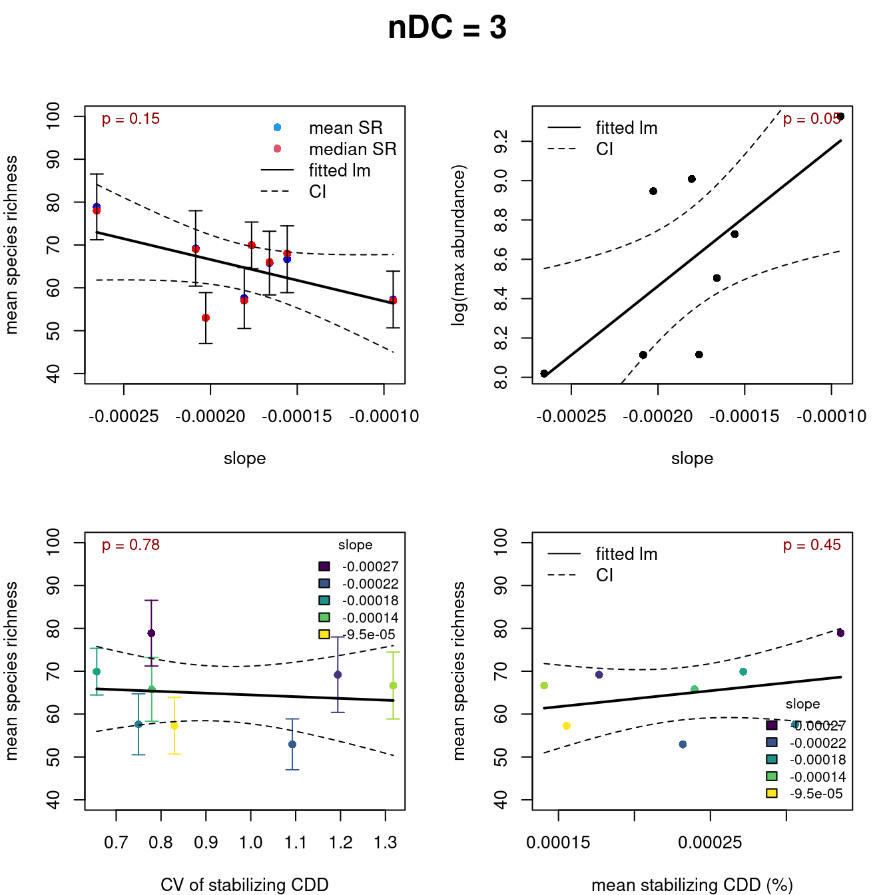

library(PhyloSim)
library(parallel)
library(dplyr)
library(tidyverse)
library(metafor)
library(viridis)
# root <- "~/Uni/Master/MA/" # work from local machine
root <- "~/cyber_synch/" # work from uni bayreuth serverQuantification of stabilizing CDD
Abbreviations
[n,p]DD = [neagitve, positive] density dependence
What does stabilizing CDD mean in my thesis ?
I quantified stabilizng CDD similar to Hülsmann et al. (2024.) It is defined as the increase in the probability of mortality with the addition of one conspecific neighbor. I will walk you through the step-by-step process of adapting the analysis pipeline, initially designed for empirical data, to my simulated data. This script is based on XXXXX tutorial.
1 Workflow
To get an overview of the workflow, here the main step:
- load the simulations
- detect the number of conspecific neighbors for all individuals
- convert result matrices to tabular data
- for each run extract species wise information (conspecific neighbors and species abundance) Now we have species wise information. The next steps are applied to each species of each run.
- run a binomial glm with mortality chance as response and conspecific neighbors as predictors
- extract the coefficients and variance-covariance matrix (=vcov) for all species
- simulate new coefficients based on the extracted one and the vcov with the
MASS::mvrnorm()function - based on that simulations i predict and average the increase in mortality chance with the addition of one conspecific neighbor. This is the stabilizing CDD
- by averaging after predicting from simulations I account for the non-linear predictions resulting from the sigmoidal logit link function of the binomial glm
- with the
metafor::rma()function I run the meta regression with the species abundance as moderator variable, correcting for uncertainty differences between different species abundances - visualization of the resulting regressions and further plots
2 Data preparation and explanation
The runs that I load are generated with a random sampling of the nDD and pDD strength, specificity kernel, and spatial kernel.
The strength is a simple scalar that ranges from 0 to 1. For details on the specificity kernel see XXXXX. In a first step, I present the spatial kernel (param = densityCut).
2.1 The spatial kernel (parameter = densityCut)
2.1.1 visualization and mathematical definition
The parameter for the spatial kernel is named nDensityCut or pDensityCut, depending on which DD effect it refers to. The provided value is used as the radius to generate a circular neighborhood around the focal cell. Neighbors within this radius exert a density-dependent (DD) effect on the focal cell. While the overall net effect remains constant, increasing the size of the neighborhood causes the DD effect from each individual neighbor to be spread out among the new neighbors. As a result, the net effect remains unchanged, but the influence of each individual neighbor is diluted.
The next chunk shows a function that can be used to asses the neighborhood of different radii.
plot_combined_neighborhoods <- function(radii = c(1, 3, 5), matrix_size = 10) {
# Create matrix filled with zeros
mat <- matrix(0, nrow = matrix_size, ncol = matrix_size)
# Find center position
center_x <- ceiling(matrix_size / 2)
center_y <- ceiling(matrix_size / 2)
# Mark center cell with highest value
mat[center_x, center_y] <- length(radii) + 1
# Process each radius (from smallest to largest to show innermost radius)
for (r_idx in 1:length(radii)) {
radius <- radii[r_idx]
offsets <- getCircularOffsets(radius)
# Mark neighbor cells for this radius
for (i in 1:nrow(offsets)) {
neighbor_x <- center_x + offsets$dx[i]
neighbor_y <- center_y + offsets$dy[i]
# Check if neighbor is within matrix bounds
if (neighbor_x >= 1 && neighbor_x <= matrix_size &&
neighbor_y >= 1 && neighbor_y <= matrix_size) {
# Always mark with current radius (innermost radius takes priority)
mat[neighbor_x, neighbor_y] <- r_idx
}
}
}
# Create custom color palette
colors <- c("white","black", "darkgrey", "lightgrey", "red")
# 0=white (empty), 1=lightblue (radius 1), 2=lightgreen (radius 3),
# 3=orange (radius 5), 4=red (center)
# Plot using image function
image(1:matrix_size, 1:matrix_size, mat,
col = colors[1:(length(radii) + 2)],
main = "",
xlab = "X coordinate",
ylab = "Y coordinate",
axes = TRUE)
# Add grid lines
abline(h = 1:matrix_size - 0.5, col = "gray", lty = 1, lwd = 0.3)
abline(v = 1:matrix_size - 0.5, col = "gray", lty = 1, lwd = 0.3)
# Create legend
legend_labels <- c(paste("Radius", radii), "Center")
legend_colors <- colors
legend("topright",
legend = legend_labels,
fill = legend_colors[2:length(legend_colors)],
bty = "n",
cex = 0.8)
# Calculate and print neighbor counts for each radius
neighbor_counts <- sapply(radii, function(r) nrow(getCircularOffsets(r)))
return(list(matrix = mat, neighbor_counts = neighbor_counts))
}
# Reset plotting parameters and create single plot
par(mfrow = c(1, 1), mar = c(5, 4, 4, 2))
# Plot combined neighborhoods
result_combined <- plot_combined_neighborhoods(radii = c(5,3,1), matrix_size = 15)The circular neighborhood with a given radius ( r ) can be expressed as:
For each \(i = -r\) to \(r\):
\[
\quad y_{\text{Lim}} = \left\lfloor \sqrt{r^2 - i^2} \right\rfloor\\
\] For each \(i\) the vertical offset \(j\) ranges from \(-y_{\text{Lim}}\) to \(y_{\text{Lim}}\).
The total number of cells within the circular neighborhood, excluding the focal cell at the center, is given by:
\[ \sum_{i=-r}^{r} \sum_{j=-y_{\text{Lim}}}^{y_{\text{Lim}}} 1, \quad \text{except for} \quad (i=0, j=0) \]
Where:
\(r\) is the radius of the circular neighborhood
\(i\) and \(j\) represent the horizontal and vertical offsets from the central cell
\(y_{\text{Lim}}\) is the vertical offset limit for each horizontal offset \(i\)
The focal cell \((i=0, j=0)\) is excluded from the count
To easily count the neighbors within R, you can combine the PhyloSim::getCircularOffsets() function with the nrow() function:
getCircularOffsets(radius = 1) dx dy
1 -1 0
2 0 -1
3 0 1
4 1 0nbR1 <- nrow(getCircularOffsets(radius = 1))
nbR5 <- nrow(getCircularOffsets(radius = 5))If the spatial kernel (i.e., densityCut) is set to 1, the focal cell has 4 neighbors. With radius = 5, the focal cell has 80 neighbors.
2.1.2 The spatial kernel in the simulations
Below, I show that the spatial kernel (i.e., densityCut) varies within a specific batch. A batch is a grouping of runs computed parallel.
# load in runs with
runsRaw <- readRDS(paste0(root, "/local/runs/mstr/20250903/ranRuns_i.rds"))
# check maximum densityCut value
res <- sapply(runsRaw, function(x){
res <- unique(x$Model$nDensityCut, x$Model$pDensityCut)
return(res)
})The batch contains the following densityCut values: 1, 2, 3, 4, 5, indicating that nDD or pDD has a variable spatial extent across runs. This is important for our regression method, where the number of conspecific neighbors serves as a predictor. To ensure comparability across the 50 runs in the batch, we use the largest spatial kernel observed in the batch for all runs (XXXXX explains why). The maximum value in our batch is 5. Thus, even if a run has nDensityCut = 1 and pDensityCut = 2, we expand the radius for counting conspecific neighbors to 5.
2.2 Assessing conspecific neighbors and mortalities
Having determined the maximum spatial kernel, we use it to define the neighborhood radius within which conspecific neighbors are counted. The function below does this.
Structure of runs before counting conspecific neighbors: specMat, traitMat, envMat, compMat, neutMat, summaries
runsCon <- getConNeigh(runsRaw, radius = 5)Structure of runs before counting conspecific neighbors: specMat, traitMat, envMat, compMat, neutMat, summaries, mortMat, idMat, conNeighMat
The process added a matrix of conspecific neighbors and a mortality matrix, both shown below.
par(mfrow = c(2,2),
oma = c(1, 1, 0, 0),
mar = c(2, 4, 4, 2),
mai=c(0.6,0.6,0.1,0.1))
image(runsCon[[1]]$Output$`90001`$specMat, xaxt = "n", yaxt = "n")
image(runsCon[[1]]$Output$`90001`$conNeighMat, xaxt = "n", yaxt = "n")
image(runsCon[[1]]$Output$`90001`$mortMat, xaxt = "n", yaxt = "n")
image(runsCon[[1]]$Output$`90000`$mortMat, xaxt = "n", yaxt = "n")
mtext("x-dimensions",
side = 1,
outer = TRUE,
line = -1,
cex = 1)
mtext("y-dimensions",
side = 2,
outer = TRUE,
line = -2,
cex = 1)To better understand how data is sampled with respect to time (i.e., how generations are set) we do an excursion.
2.2.1 Generations and censii
Hülsmann et al. (2024) use dynamic data for their analysis, meaning that the same plot is re-measured after a certain period—approximately five years in their study. Each measurement is referred to as a census. Only plots with at least one re-measurement were included. Between the measurements for each species the probability of mortality was analyzed with respect to conspecific neighbors.
I adopt a similar approach for my simulated data. I assess the simulation landscape every \(n\) generations. Unlike the empirical approach, I analyze mortality changes at only the subsequent generation \(n+1\). Together, \(n\) and \(n+1\) form a set of censuses, representing a single data unit. Different sets of censuses are independent, as \(n\) is chosen large enough to fully reshuffle the landscape matrix. Thus, one generation interval in the simulation is analogous to the five-year interval in the empirical data. The assessed generations in the current dataset are shown below.
# from the first run in the batch get the Model parameter, specifically, the runs at which results are recorded
head(runsRaw[[1]]$Model$runs)[1] 900 901 1800 1801 2700 2701tail(runsRaw[[1]]$Model$runs)[1] 88200 88201 89100 89101 90000 90001Now we can better interpret Figure 2 (bottom-right). Only a single color is visible because the generations are so far apart that no individual survives between them. Therefore, each set of censuses (\(n\) and \(n+1\)) can be treated as independent observations, allowing us to apply a simple logit-link function in the binomial GLM. This contrasts with the complementary log-log link used by Hülsmann et al. (2024), which accounts for a time series of consecutive censuses.
One more detail: we allow the community to reach an equilibrium, which is visually assessed here. We discard earlier generations and analyze only those starting from the equilibrium. We assess the equilibtrium by checking the species richness in the community.
example <- list(runsCon[[1]],runsCon[[43]]) # pick only two, otherwise plots occupy to much space
class(example) <- "PhylosimList"
S <- getSpecTime(example, plot = TRUE, ymax = 100, title = c("run 1", "run 43"))Run 43 clearly demonstrates that the community must reach equilibrium over time. We discard all non-equilibrium periods by generously removing half of the runs.
runsConEq <- lapply(runsCon, function(x){
x$Output <- x$Output[101:200] # discard matrices
x$Model$runs <- x$Model$runs[101:200] # reduce generations (only resembles parameter settings, but used for naming)
return(x)
})
class(runsConEq) <- "PhylosimList" # is needed for S3 functionsexample <- list(runsConEq[[1]],runsConEq[[43]])
class(example) <- "PhylosimList"
S <- getSpecTime(example, plot = TRUE, ymax = 100, title = c("run 1", "run 43"))Now that the pre-equilibrium generations have been discarded, we can convert the matrices into tabular data.
2.3 Converting matrices to tabular data
Next, we convert the matrix data into tabular data with the PhyloSim::getMatToTab() function. With the argument detailedParams = TRUE we include the parameter settings as separate columns. We save the tabular data.
# convert matrices to tabular data. This is done parallel, as it takes longer
cl <- makeCluster(length(runsCon))
clusterExport(cl, c("getMatToTab", "runsCon"))
tab <- parLapply(cl = cl, X = runsCon, fun = function(x) getMatToTab(x, detailedParams = TRUE))
stopCluster(cl)Now, we delete every second generation. Remember, we calculated moralities that happened between \(n\) and \(n+1\). The resulting matrix was stored in \(n\). Therefore, \(n+1\) is no longer needed and discarded.
tab <- lapply(tabRaw, function(x){
res <- x %>%
filter(census %% 2 == 0)
return(res)
})
head(tab[[1]]) # first run in batch census indId specId mortNextGen con abund pDD nDD pDDVar
1 45900 1654785 88400 FALSE 46 211 0.7311996 0.7231072 1.836139
2 45900 1654786 57171 FALSE 12 1513 0.7311996 0.7231072 1.836139
3 45900 1654787 88407 FALSE 8 236 0.7311996 0.7231072 1.836139
4 45900 1654788 88407 FALSE 9 236 0.7311996 0.7231072 1.836139
5 45900 1654789 88407 FALSE 7 236 0.7311996 0.7231072 1.836139
6 45900 1654790 57171 FALSE 32 1513 0.7311996 0.7231072 1.836139
nDDVar pDC nDC
1 14.13058 2 2
2 14.13058 2 2
3 14.13058 2 2
4 14.13058 2 2
5 14.13058 2 2
6 14.13058 2 2tail(tab[[1]]) census indId specId mortNextGen con abund pDD nDD pDDVar
819195 90000 3276795 146921 FALSE 33 1941 0.7311996 0.7231072 1.836139
819196 90000 3276796 154140 TRUE 15 2121 0.7311996 0.7231072 1.836139
819197 90000 3276797 146921 FALSE 33 1941 0.7311996 0.7231072 1.836139
819198 90000 3276798 146921 TRUE 32 1941 0.7311996 0.7231072 1.836139
819199 90000 3276799 175542 FALSE 6 22 0.7311996 0.7231072 1.836139
819200 90000 3276800 146921 TRUE 22 1941 0.7311996 0.7231072 1.836139
nDDVar pDC nDC
819195 14.13058 2 2
819196 14.13058 2 2
819197 14.13058 2 2
819198 14.13058 2 2
819199 14.13058 2 2
819200 14.13058 2 2We now have tabular data, where the columns are abbreviations. Their full meanings are: individual ID, species ID, mortality in the next generation (\(n+1\)), number of conspecific neighbors, species abundance, pDD/nDD strength (>0:1), pDD/nDD specificity parameter (denoted as Var, >0:20), and the radius used for the spatial kernel (pDC/nDC,>0). Note that Var is equivalent to specificity; the different name is a remnant from previous terminology. The n/pDDVar value is used as lambda in the exponential function that defines the specificity kernel.
3 Statistical analysis
3.1 Data preparation
To assess the relationship between species abundance and stabilizing CDD, I split the tabular data from each run into smaller datasets, each containing all observations for a single species. While I could use the species ID for splitting, there is a possibility that the same species survives across distant censuses. To ensure that each dataset corresponds to the same species within a single census, I append the generation number (= census) to the species ID. Species with fewer than 100 individuals are filtered out to improve statistical robustness.
cores <- length(tab)
cl <- makeCluster(cores)
clusterEvalQ(cl, {
library(dplyr)
})
tabS <- parLapply(cl, tab, function(x) {
x %>%
filter(abund > 100) %>%
mutate(specIdCen = paste0(specId, census)) %>%
select(-indId) # not needed here
})
stopCluster(cl)To quantify stabilizing CDD, I assess the effect of a single conspecific neighbor on an individual’s mortality. For this, I run species-wise binomial GLMs, using mortality status as the response and the number of conspecific neighbors as the predictor. I then extract the model coefficients (intercept and conspecific neighbor coefficient) along with the variance-covariance matrix.
cores <- length(tab)
cl <- makeCluster(cores)
mcS_err <- parLapply(cl, tabS, function(x) {
specIDs <- unique(x$specIdCen) # looping through all species within one census
res <- vector("list", length(specIDs))
i <- 1
for (sID in specIDs) {
dat <- x[x$specIdCen == sID, ]
mod <- glm(mortNextGen ~ con, data = dat, family = binomial())
sfm <- summary(mod)$coefficients # extract coefficients
vc <- vcov(mod)[c("(Intercept)", "con"), c("(Intercept)", "con")] # extract variance-covariance matrix
res[[i]] <- list(
specId = sID, # keep species ID in the new data format
abund = dat$abund[1], # and species abundance
coef = coef(mod)[c(1,2)],
vcov = vc
)
i <- i + 1
}
return(res)
})
# Stop the cluster
stopCluster(cl)The resulting data contains species wise information with its abundance, the coefficients and the variance-covariance matrix of the model.
head(mcS_err[[1]])[1:2] # first run in batch, first and second species within this run[[1]]
[[1]]$specId
[1] "8840045900"
[[1]]$abund
[1] 211
[[1]]$coef
(Intercept) con
-0.45847382 -0.01099499
[[1]]$vcov
(Intercept) con
(Intercept) 0.100201782 -2.334804e-03
con -0.002334804 7.025949e-05
[[2]]
[[2]]$specId
[1] "5717145900"
[[2]]$abund
[1] 1513
[[2]]$coef
(Intercept) con
-0.83990484 -0.00213756
[[2]]$vcov
(Intercept) con
(Intercept) 0.0182698061 -4.353214e-04
con -0.0004353214 1.260538e-05The next code estimates the variance of the marginal effect of a conspecific neighbor on mortality using a posterior simulation (Tutorial et al. XXXX). It simulates 100 draws of the GLM coefficients from their multivariate normal distribution, computes predicted stabilizing CDD by averaging through all simulations, and additionally computes the standard error, and 95% intervals. This is necessary for a binomial GLM because the logit coefficients are non-linear on the probability scale, so simulating captures the true effect and its uncertainty.
To compute the predicted mortality probabilities, I first calculate the survival probability under the intercept scenario, representing the baseline probability for an individual without any additional conspecific neighbors. Next, I calculate the survival probability for one extra conspecific neighbor. The difference between these two probabilities corresponds to the change in survival probability per additional conspecific neighbor, which is used to quantify stabilizing CDD as defined in Hülsmann et al. (2024).
cores <- length(mcS_err)
cl <- makeCluster(cores)
mcS_err_sim <- parLapply(cl, mcS_err, function(x){
lapply(x, function(y){
sim <- MASS::mvrnorm(n = 100, mu = c(y$coef[1], y$coef[2]), Sigma = y$vcov)
mort0 <- plogis(sim[, 1])
mort1 <- plogis(sim[, 1] + sim[, 2])
mort_diff <- mort1 - mort0
return(data.frame(
abund = y$abund,
specId = y$specId,
mean = mean(mort_diff), # averaging of mean effect size
se = sd(mort_diff),
ci_low = quantile(mort_diff, 0.025),
ci_high = quantile(mort_diff, 0.975)
))
})
})
# Stop the cluster
stopCluster(cl)From the coefficients and the variances-covariance matrix we simulated and averaged stabilizing CDD with its standard error and 95% intervals (ci_low and ci_high).
head(mcS_err_sim[[1]]) # first run in batch, first six species[[1]]
abund specId mean se ci_low ci_high
2.5% 211 8840045900 -0.002505548 0.001848471 -0.006046942 0.0007562205
[[2]]
abund specId mean se ci_low ci_high
2.5% 1513 5717145900 -0.0005224779 0.0008828653 -0.002097644 0.0008879877
[[3]]
abund specId mean se ci_low ci_high
2.5% 236 8840745900 0.0006282622 0.001985027 -0.003785081 0.003273112
[[4]]
abund specId mean se ci_low ci_high
2.5% 250 8947045900 0.0001496342 0.002283054 -0.00511769 0.003392735
[[5]]
abund specId mean se ci_low ci_high
2.5% 417 8762345900 -0.001693225 0.002435478 -0.006306138 0.002743931
[[6]]
abund specId mean se ci_low ci_high
2.5% 492 8101245900 -0.002123789 0.001527101 -0.005718139 0.0004285285Then, I flatten the nested simulation results into single data frames per run and add a column with the log-transformed species abundance.
m4 <- lapply(mcS_err_sim, function(group) {
do.call(rbind, group)
})
m4 <- lapply(m4, function(group) {
row.names(group) <- NULL
group <- group %>%
mutate(log_N = log(abund))
return(group)
})Like mcS_err_simbut flattened.
head(m4[[1]]) abund specId mean se ci_low ci_high
1 211 8840045900 -0.0025055485 0.0018484712 -0.006046942 0.0007562205
2 1513 5717145900 -0.0005224779 0.0008828653 -0.002097644 0.0008879877
3 236 8840745900 0.0006282622 0.0019850274 -0.003785081 0.0032731125
4 250 8947045900 0.0001496342 0.0022830542 -0.005117690 0.0033927354
5 417 8762345900 -0.0016932249 0.0024354778 -0.006306138 0.0027439312
6 492 8101245900 -0.0021237887 0.0015271005 -0.005718139 0.0004285285
log_N
1 5.351858
2 7.321850
3 5.463832
4 5.521461
5 6.033086
6 6.198479In another preparatory step the data is converted to an escalc object, needed for the meta regression via the metafor::escalc() function, with species ID as the study label. measure = "GEN" implies that effect size (yi) and its variance (sei) are already calculated and supplied to the function.
dat_meta <- lapply(m4, function(x) {
escalc(measure = "GEN", yi = mean, sei = se, slab = specId, data = x)
})Same as before but as escalc object
dat_meta[[1]][1:6,1:7] # somehow head() doesnt work on escalc objects
abund specId mean se ci_low ci_high
1 211 8840045900 -0.0025055485 0.0018484712 -0.006046942 0.0007562205
2 1513 5717145900 -0.0005224779 0.0008828653 -0.002097644 0.0008879877
3 236 8840745900 0.0006282622 0.0019850274 -0.003785081 0.0032731125
4 250 8947045900 0.0001496342 0.0022830542 -0.005117690 0.0033927354
5 417 8762345900 -0.0016932249 0.0024354778 -0.006306138 0.0027439312
6 492 8101245900 -0.0021237887 0.0015271005 -0.005718139 0.0004285285
log_N
1 5.351858
2 7.321850
3 5.463832
4 5.521461
5 6.033086
6 6.198479 class(dat_meta[[1]])[1] "escalc" "data.frame"This code fits a meta regression model for each dataset in parallel. For each species, it fits a meta-regression model metafor::rma() with log_N as a moderator, meaning the model tests whether stabilizing CDD varies systematically with species abundance. In case the model fails for some runs, I build a tryCatch mechanisms that excludes this failed run from the results.
cl <- makeCluster(length(dat_meta))
clusterExport(cl, varlist = c("dat_meta"), envir = environment())
metamod <- parLapply(cl, dat_meta, function(x) {
tryCatch({
metafor::rma(
yi = yi,
vi = vi,
mods = ~ log_N,
method = "REML",
data = x
)
}, error = function(e) {
return(NULL) # Return NULL for failed models
})
})
stopCluster(cl)
# Remove NULL elements and keep names aligned
failed_indices <- sapply(metamod, is.null)
namesShort <- names(metamod)
metamod <- metamod[!failed_indices]
names(metamod) <- namesShort[!failed_indices]
# Report which models failed
if(any(failed_indices)) {
cat("Failed models:", paste(namesShort[failed_indices], collapse = ", "), "\n")
}4 Visualize results
After fitting the model, we run predictions and visualize the results. First we compute predictions based on the datmeta (escalc) object with a sequence of newly predicted log-abundance (log_N) values as new moderators, according to the fitted rma.
pred <- lapply(dat_meta, function(x){
expand_grid(log_N = seq(min(x$log_N, na.rm = TRUE),
max(x$log_N, na.rm = TRUE),
length.out = 1000))
})
pred <- lapply(pred, function(x){
x$abund <- exp(x$log_N)
x
})
pred <- lapply(seq_along(pred), function(i){
x <- pred[[i]]
y <- metamod[[i]]
cbind(x, predict(object = y, newmods = x$log_N))
})
names(pred) <- names(metamod) Because I am interested in the relationship between stabilizing CDD and species abundance, I extract the slope from the meta-regression model. A more negative slope indicates a stronger negative relationship, while a slope of 0 indicates no relationship. Additionally, I extract species abundance, the coefficient of variation (CV = SD / mean), and mean species richness (SR). The SR is averaged after filtering out non-equilibrium generations (see Assessing conspecific neighbors and mortalities).
Finally, I filter the results by different spatial kernels to verify that the applied GLM—with an increased neighborhood radius even where DD acted within a smaller kernel (see The spatial kernel)—produces valid results across all parameter settings.
names(runsCon) <- names(dat_meta)
srRaw <- getSpecTime(runsCon, plot = FALSE)
# Get slopes
slope <- map_dbl(metamod, ~ coef(.x)[2]) %>%
enframe(name = "param", value = "slope")
# Get abundance (use max to exclude extreme values)
abund <- map_dbl(dat_meta, ~ max(.x$abund)) %>%
enframe(name = "param", value = "abund")
# Get CV of predictions
cv <- map(pred, ~ {
meanMC <- mean(.x$pred)
sdMC <- sd(.x$pred)
rangeMC <- diff(range(.x$pred))
tibble(meanMC = meanMC, sdMC = sdMC, rangeMC = rangeMC, cvMC = sdMC / meanMC)
}) %>%
bind_rows(.id = "param")
# Get species richness summary
sr <- map(srRaw, ~ {
vals <- .x$spec_rich[99:200]
tibble(
meanSR = mean(vals),
sdSR = sd(vals),
medianSR = median(vals)
)
}) %>%
bind_rows(.id = "param") %>%
mutate(medianSR = as.integer(medianSR))
# Combine all results
res <- list(slope, sr, abund, cv) %>%
reduce(left_join, by = "param") %>%
mutate(abund = as.integer(abund))
# Filter by scenario types
scenario_types <- expand.grid(prefix = c("P", "N"), comp = paste0("C", 1:5), stringsAsFactors = FALSE)
res_scenarios <- map2(scenario_types$prefix, scenario_types$comp, ~ {
pattern <- if (.x == "P") paste0(.x, ".*-", .y, "_") else paste0(.x, ".*-", .y, "$")
res %>% filter(grepl(pattern, param))
}) %>%
set_names(paste0(scenario_types$prefix, scenario_types$comp))## ---- helper functions ----
pred_lm_log <- function(mod, newdata, k = 2) {
pred <- predict(mod, newdata = newdata, se.fit = TRUE)
fit <- exp(pred$fit)
lo <- exp(pred$fit - k*pred$se.fit)
hi <- exp(pred$fit + k*pred$se.fit)
list(fit = fit, lo = lo, hi = hi)
}
# Helper function to format p-values
format_pvalue <- function(p) {
if (p < 0.001) {
return("p < 0.001")
} else if (p < 0.01) {
return(sprintf("p = %.3f", p))
} else {
return(sprintf("p = %.2f", p))
}
}
# Unified function for species richness vs slope plot
plot_sr_slope <- function(dat, tag, ylim_sr = c(40,100)) {
fm1 <- lm(meanSR ~ slope, data = dat)
newdat <- data.frame(slope = seq(min(dat$slope), max(dat$slope), length = 100))
predi <- predict(fm1, newdata = newdat, se.fit = TRUE)
# Extract p-value
p_val <- summary(fm1)$coefficients[2, 4] # p-value for slope coefficient
p_text <- format_pvalue(p_val)
plot(dat$slope, dat$meanSR, ylim = ylim_sr, pch = 16, col = "blue",
xlab = "slope", ylab = "mean species richness")
points(dat$slope, dat$medianSR, pch = 16, col = "red")
arrows(dat$slope, dat$meanSR - dat$sdSR, dat$slope, dat$meanSR + dat$sdSR,
angle = 90, code = 3, length = 0.05)
lines(newdat$slope, predi$fit, lwd = 2, col = 1)
lines(newdat$slope, predi$fit - 2*predi$se.fit, lwd = 1, lty = 2, col = 1)
lines(newdat$slope, predi$fit + 2*predi$se.fit, lwd = 1, lty = 2, col = 1)
legend("topright", legend = c("mean SR", "median SR", "fitted lm", "CI"),
pch = c(16,16,NA,NA), lty = c(NA,NA,1,2), col = c(4,2,1,1), bty = "n")
# Add p-value text
text(x = par("usr")[1] + 0.02 * diff(par("usr")[1:2]),
y = par("usr")[4] - 0.05 * diff(par("usr")[3:4]),
labels = p_text, pos = 4, cex = 0.9, col = "darkred")
}
# Unified function for abundance vs slope plot (now using log transform and lm)
plot_abund_slope <- function(dat, tag) {
# Log-transform abundance (add 1 to avoid log(0))
dat$log_abund <- log(dat$abund)
# Fit linear model on log(abundance)
fm <- lm(log_abund ~ slope, data = dat)
# Prediction along slope range
newdat <- data.frame(slope = seq(min(dat$slope), max(dat$slope), length = 100))
pg <- pred_lm_log(fm, newdat, k = 2)
# Extract p-value for slope
p_val <- summary(fm)$coefficients[2, 4]
p_text <- format_pvalue(p_val)
# Plot log-transformed abundances
plot(dat$slope, dat$log_abund, pch = 16, col = 1,
xlab = "slope", ylab = "log(max abundance)")
# Add fitted line and confidence intervals
lines(newdat$slope, log(pg$fit), lwd = 2, col = 1)
lines(newdat$slope, log(pg$lo), lwd = 1, lty = 2, col = 1)
lines(newdat$slope, log(pg$hi), lwd = 1, lty = 2, col = 1)
# Add legend
legend("topleft", legend = c("fitted lm", "CI"), lty = c(1,2),
col = c(1,1), bty = "n")
# Add p-value text
text(x = par("usr")[1] + 0.75*diff(par("usr")[1:2]),
y = par("usr")[4] - 0.05*diff(par("usr")[3:4]),
labels = p_text, pos = 4, cex = 0.9, col = "darkred")
}
# Unified function for species richness vs CV mortality change
plot_sr_cvmc <- function(dat, tag, ylim_sr = c(40,90)) {
fm3 <- lm(meanSR ~ cvMC, data = dat)
newdat <- data.frame(cvMC = seq(min(dat$cvMC), max(dat$cvMC), length = 100))
pred <- predict(fm3, newdata = newdat, se.fit = TRUE)
# Extract p-value
p_val <- summary(fm3)$coefficients[2, 4] # p-value for cvMC coefficient
p_text <- format_pvalue(p_val)
cols <- viridis(length(dat$slope))[rank(dat$slope)]
plot(dat$cvMC, dat$meanSR, ylim = ylim_sr, pch = 16, col = cols,
xlab = "CV of stabilizing CDD", ylab = "mean species richness")
arrows(dat$cvMC, dat$meanSR - dat$sdSR, dat$cvMC, dat$meanSR + dat$sdSR,
angle = 90, code = 3, length = 0.05, col = cols)
lines(newdat$cvMC, pred$fit, lwd = 2, col = 1)
lines(newdat$cvMC, pred$fit - 2*pred$se.fit, lwd = 1, lty = 2, col = 1)
lines(newdat$cvMC, pred$fit + 2*pred$se.fit, lwd = 1, lty = 2, col = 1)
legend("topright", title = "slope",
fill = viridis(5),
legend = signif(seq(min(dat$slope), max(dat$slope), length.out = 5), 2),
bty = "n", cex = .8)
# Add p-value text
text(x = par("usr")[1] + 0.02 * diff(par("usr")[1:2]),
y = par("usr")[4] - 0.05 * diff(par("usr")[3:4]),
labels = p_text, pos = 4, cex = 0.9, col = "darkred")
}
# Unified function for species richness vs mean stabilizing CDD
plot_sr_meanmc <- function(dat, tag, ylim_sr = c(40,90)) {
fm4 <- lm(meanSR ~ meanMC, data = dat)
newdat <- data.frame(meanMC = seq(min(dat$meanMC), max(dat$meanMC), length = 100))
pred <- predict(fm4, newdata = newdat, se.fit = TRUE)
# Extract p-value
p_val <- summary(fm4)$coefficients[2, 4] # p-value for log(meanMC) coefficient
p_text <- format_pvalue(p_val)
cols <- viridis(length(dat$slope))[rank(dat$slope)]
plot(dat$meanMC, dat$meanSR, ylim = ylim_sr, pch = 16, col = cols,
xlab = "mean stabilizing CDD (%)", ylab = "mean species richness")
lines(newdat$meanMC, pred$fit, lwd = 2, col = 1)
lines(newdat$meanMC, pred$fit - 2*pred$se.fit, lwd = 1, lty = 2, col = 1)
lines(newdat$meanMC, pred$fit + 2*pred$se.fit, lwd = 1, lty = 2, col = 1)
legend("bottomright", title = "slope",
fill = viridis(5),
legend = signif(seq(min(dat$slope), max(dat$slope), length.out = 5), 2),
bty = "n", cex = .8)
legend("topleft", legend = c("fitted lm", "CI"),
lty = c(1,2), bty = "n")
# Add p-value text
text(x = par("usr")[1] + 0.75 * diff(par("usr")[1:2]),
y = par("usr")[4] - 0.05 * diff(par("usr")[3:4]),
labels = p_text, pos = 4, cex = 0.9, col = "darkred")
}
# Master plotting function for all scenario plots (4 plot types per scenario)
plot_all_scenarios <- function(scenario_list, scenario_names,
ylim_sr = c(40,100)) {
n_scenarios <- length(scenario_list)
# For each scenario, create all 4 plot types
for(i in 1:n_scenarios) {
# Set up 2x2 grid for each scenario with main title
par(mfrow = c(2, 2), mar = c(4,4,3,2), oma = c(0, 0, 2, 0))
# Main analysis plots
plot_sr_slope(scenario_list[[i]], scenario_names[i], ylim_sr)
plot_abund_slope(scenario_list[[i]], scenario_names[i])
plot_sr_cvmc(scenario_list[[i]], scenario_names[i], ylim_sr)
plot_sr_meanmc(scenario_list[[i]], scenario_names[i], ylim_sr)
# Add main title for the entire 4-panel plot
mtext(scenario_names[i], outer = TRUE, cex = 1.5, font = 2)
}
}
## ---- apply to scenarios C1-C5 ----
# Assuming you have data objects: resC1, resC2, resC3, resC4, resC5
scenario_dataP <- res_scenarios[str_detect(string = names(res_scenarios),pattern = "P")]
scenario_labelsP <- c("pDC = 1","pDC = 2", "pDC = 3","pDC = 4", "pDC = 5")
scenario_dataN <- res_scenarios[str_detect(string = names(res_scenarios),pattern = "N")]
scenario_labelsN <- c("nDC = 1","nDC = 2", "nDC = 3","nDC = 4", "nDC = 5")
# Generate all plots for negative scenarios
plot_all_scenarios(scenario_dataN, scenario_labelsN,
ylim_sr = c(40,100))
# Generate all plots for positive scenarios (fixed label bug)
plot_all_scenarios(scenario_dataP, scenario_labelsP,
ylim_sr = c(40,100))# Generate plot for combined data
plot_all_scenarios(list(res), "combined data",
ylim_sr = c(40,100))I analyzed 50 random runs here and repeated the same procedure for 100 additional runs. Next, we load these datasets, combine them, and visualize the results for the full set of runs.
resi <- readRDS(paste0(root, "/local/runs/mstr/20250903/ranResMax_i.rds"))
resii <- readRDS(paste0(root, "/local/runs/mstr/20250903/ranResMax_ii.rds"))
resiii <- readRDS(paste0(root, "/local/runs/mstr/20250903/ranResMax_iii.rds"))
res_all <- rbind(resi,resii,resiii)
# Generate plot for combined data
plot_all_scenarios(list(res_all), "combined data",
ylim_sr = c(40,100))5 References
Hülsmann, L., Chisholm, R. A., Comita, L., Visser, M. D., de Souza Leite, M., Aguilar, S., Anderson-Teixeira, K. J., Bourg, N. A., Brockelman, W. Y., Bunyavejchewin, S., Castaño, N., Chang-Yang, C.-H., Chuyong, G. B., Clay, K., Davies, S. J., Duque, A., Ediriweera, S., Ewango, C., Gilbert, G. S., … Hartig, F. (2024). Latitudinal patterns in stabilizing density dependence of forest communities. Nature, 627(8004), 564–571. https://doi.org/10.1038/s41586-024-07118-4
Krishnadas, M., B. Bachelot, R. Bagchi, et al. In Preparation. “Conspecific Density Dependence in Plant Communities: A TheoryBased Toolkit for Empirical Studies.”